Lesotho · Staff Admin Demo desks · DS 0.19.8 live captures
Lesotho Demo desk wireframes
Live screenshots of every Staff Admin Demo desk mapped from the ingested newer-CMS Lesotho catalogue (FM-03…FM-18). Captured from staff.lesotho.raisd.co after the two-level side menu (primary + sub-side) and design-system 0.19.8 pin. Demo seeds only — not Live CMS.
Applicants — /admin/applicants
FM-03 / FM-05 · live Staff Admin capture · DS 0.19.8 · two-level side menu
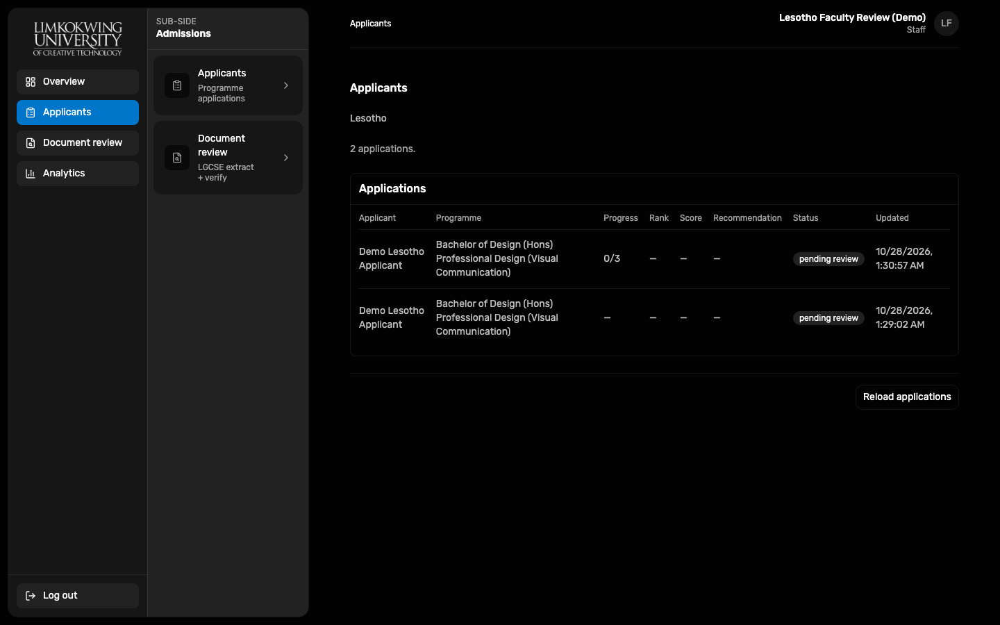
Document review — /admin/document-review
FM-04 · live Staff Admin capture · DS 0.19.8 · two-level side menu
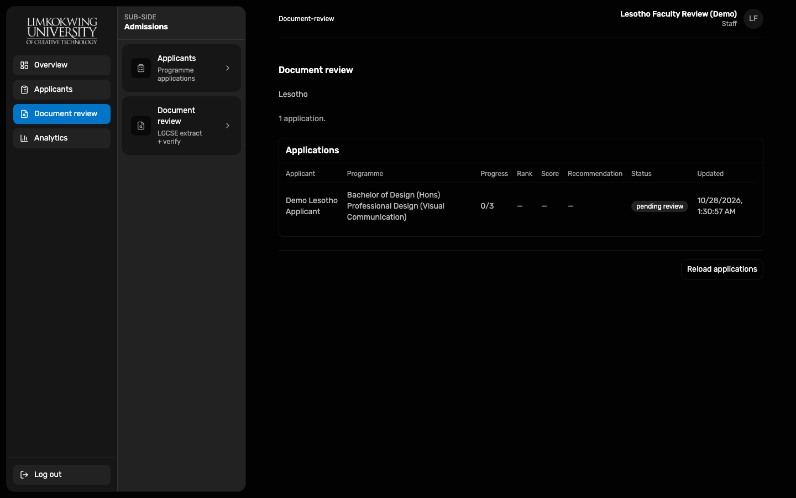
Payments — /admin/payments
FM-09 · live Staff Admin capture · DS 0.19.8 · two-level side menu
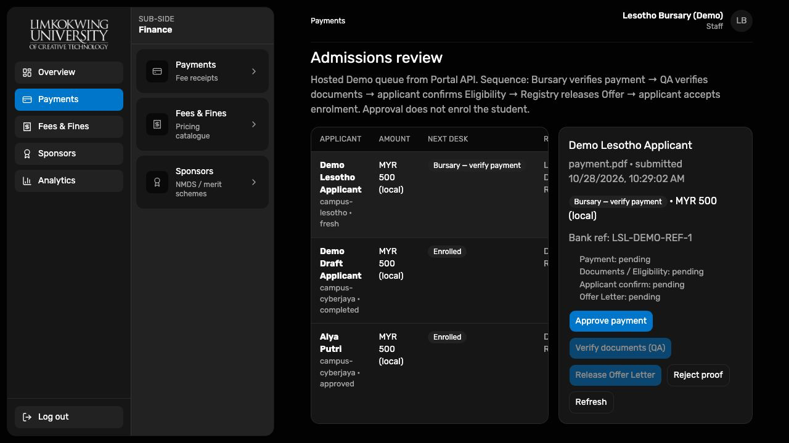
Fees & Fines — /admin/fees
FM-09 · live Staff Admin capture · DS 0.19.8 · two-level side menu
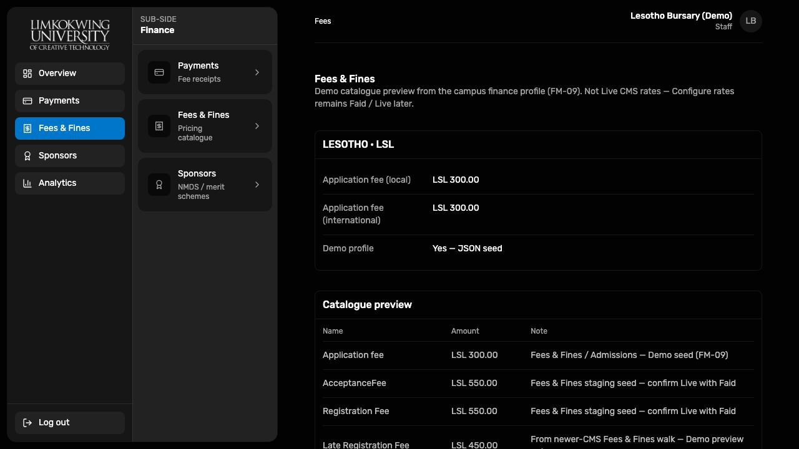
Registrations — /admin/registrations
FM-08 · live Staff Admin capture · DS 0.19.8 · two-level side menu
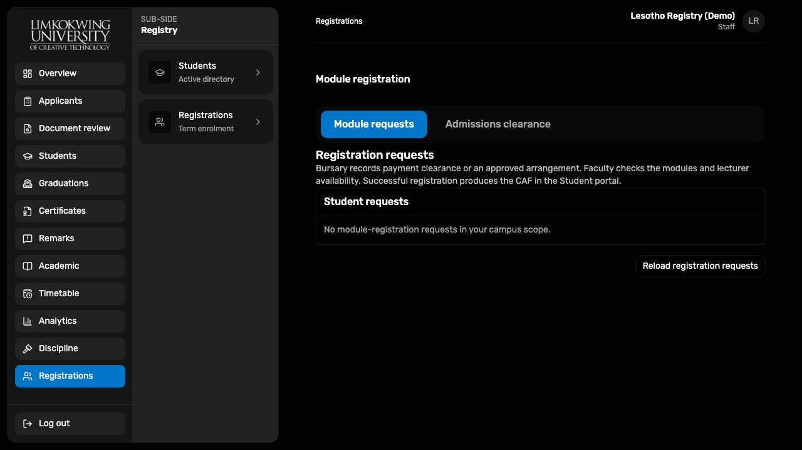
Sponsors — /admin/sponsors
FM-08 · live Staff Admin capture · DS 0.19.8 · two-level side menu
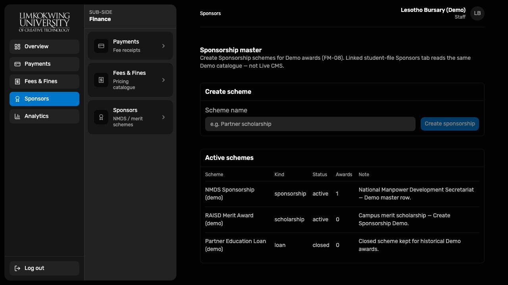
Students list — /admin/students
FM-07 · live Staff Admin capture · DS 0.19.8 · two-level side menu
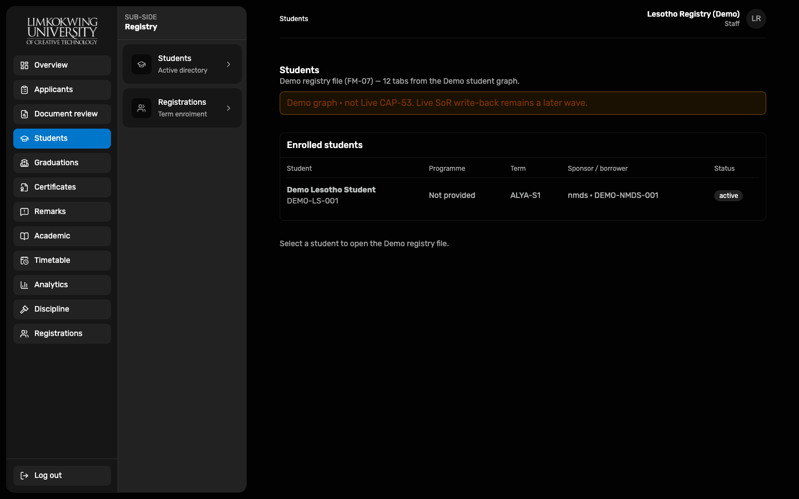
Student file (12 tabs) — /admin/students · file
FM-07 · live Staff Admin capture · DS 0.19.8 · two-level side menu
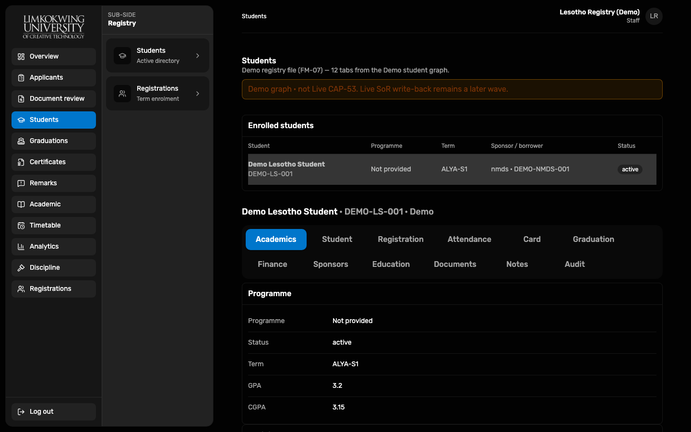
Graduations — /admin/graduations
FM-10 · live Staff Admin capture · DS 0.19.8 · two-level side menu
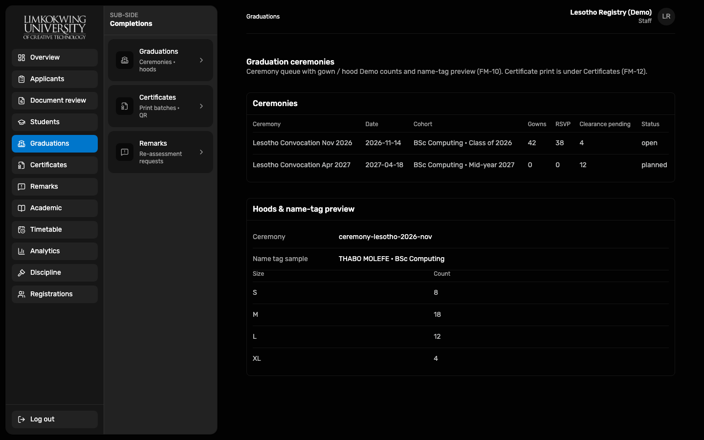
Certificates — /admin/certificates
FM-12 · live Staff Admin capture · DS 0.19.8 · two-level side menu
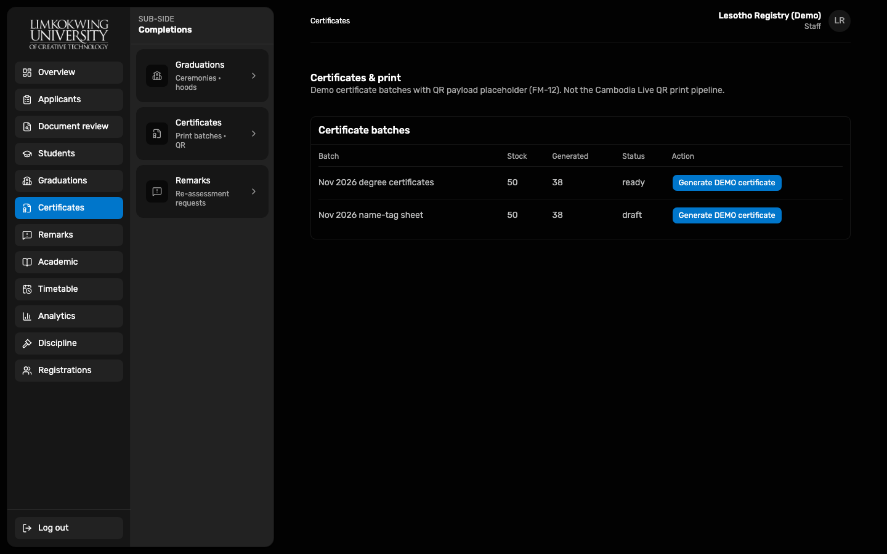
Remarks — /admin/remarks
FM-11 · live Staff Admin capture · DS 0.19.8 · two-level side menu
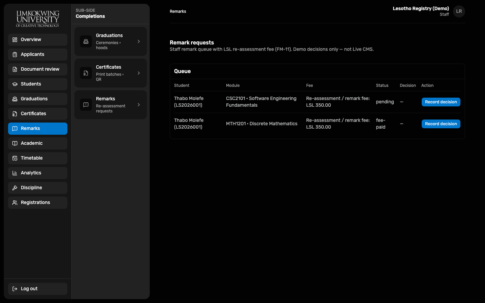
Academic — /admin/academic
FM-16 · live Staff Admin capture · DS 0.19.8 · two-level side menu
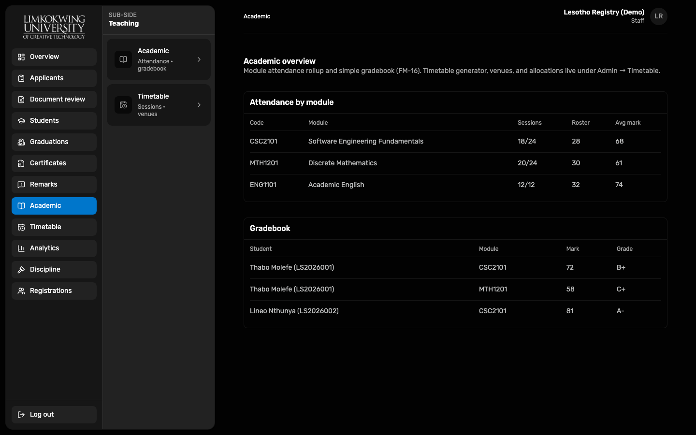
Timetable — /admin/timetable
FM-16 · live Staff Admin capture · DS 0.19.8 · two-level side menu
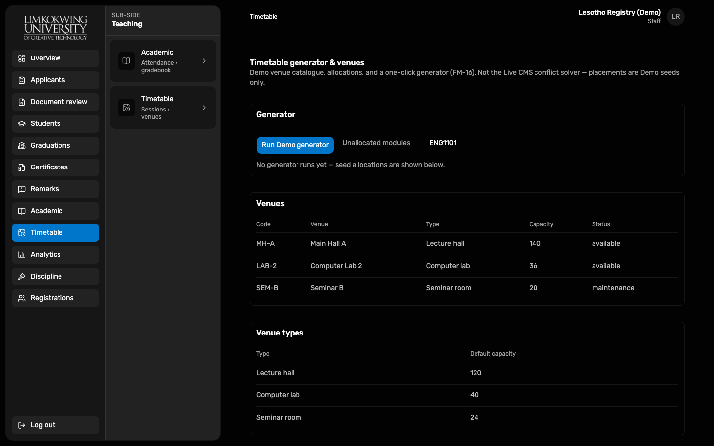
Analytics — /admin/analytics
FM-17 · live Staff Admin capture · DS 0.19.8 · two-level side menu
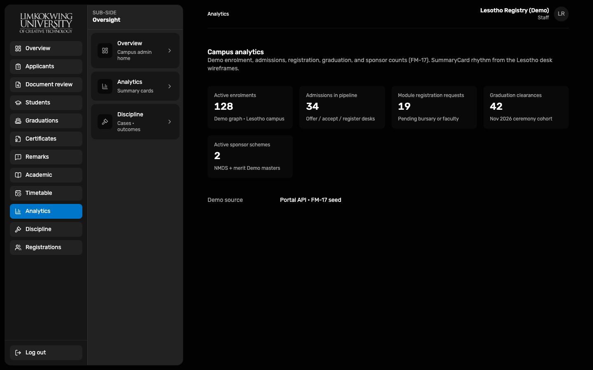
Discipline — /admin/discipline
FM-18 · live Staff Admin capture · DS 0.19.8 · two-level side menu
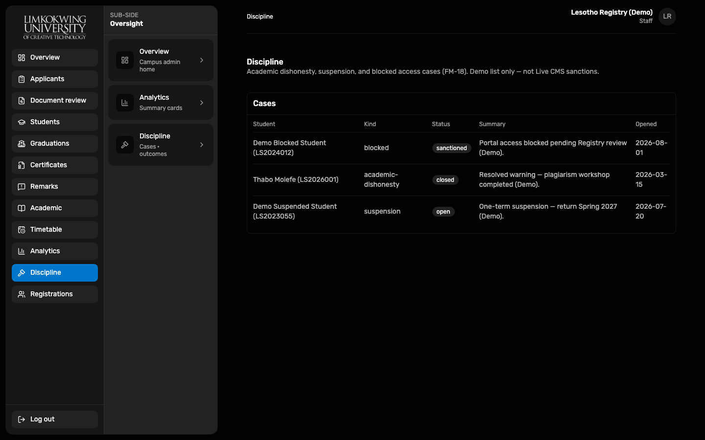